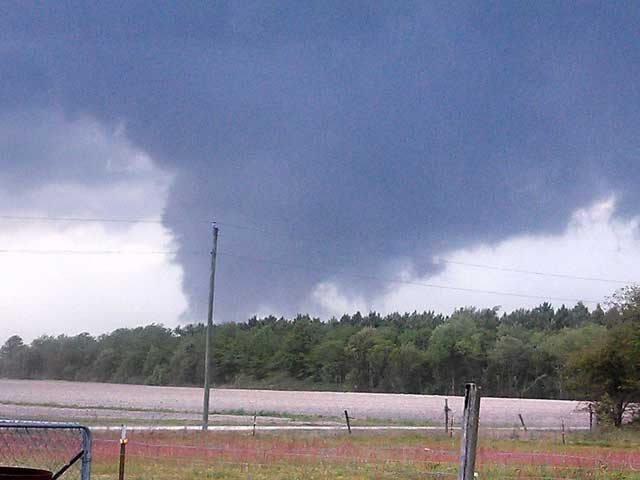

Show the code
source("./setup-and-data-prep.R")And changes in the data generating processes that recorded them

source("./setup-and-data-prep.R")NOAA National Centers for Environmental Information1 make Tornado event data available for download from their Storm Events Database2. Tornado event data is available from 1950 to the present. Specifically for this project, I downloaded 53+ years of North Carolina data3 (1970-01-01 through 2023-04-30), which was the most current available when I downloaded it on 2023-08-11. The data comes from NOAA’s National Weather Service (NWS).
The data set includes 1,430 tornado events (one record per event). Multiple events may be associated with one tornado, and multiple tornadoes can occur in one episode. When plotting tracks I filtered out records that lacked beginning or ending coordinates as well as one record with obviously bad data, leaving me with 1,097 (77%) tracks to work with. All missing coordinates are in records of tornadoes prior to 2005. Plots and models not requiring coordinates or distances or relationships derived from them use the full set of 1,428 events.
The method for counting tornadoes is summarized on Storm Data FAQ Page4
Tornadoes may contain multiple segments. A tornado that crosses a county line or state line is considered a separate segment. Also, a tornado that lifts off the ground for less than 4 minutes or 2 miles is considered a separate tornado segment. If the tornado lifts off the ground for greater than 4 minutes or 2 miles, it is considered a separate tornado. Tornadoes reported in Storm Data and the Storm Events Database are in segments. For official tornado counts by state, please use the monthly counts at the Storms Prediction Center Tornado Data.
Since it’s non-trivial to determine from the data which segments are continuations of the same tornado (see Section 5.2.2), the counts, plots and models in this analysis are of tornado segments rather than tornadoes. Event and segment are synonymous.
Data generating processes have a profound effect on the data they leave behind. Over these 50+ years undoubtedly there were many changes in NWS instruments, policies, budgets, and staffing.
For example, the accuracy of track data improved over the years as noted on the Storm Data FAQ Page. See How accurate are the latitude and longitude locations?.
Another example5 of improved tools:
One thing that has changed considerably over the past 30 years is the technology used to conduct a damage survey. As Brian Smith recalled, “I remember years ago using maps, pencil, pens, and an odometer as a guide.” Advancements with digital cameras and GPS help make the survey process more accurate. Within the past few years, a new software developed by the National Weather Service, called the Damage Assessment Toolkit (DAT), harnesses the power of smartphones and tablets. Using these devices, with just a few finger taps, forecasters can now take pictures of the damage, rate the damage using the EF scale, and upload the information to a server that can be viewed instantaneously back at the local NWS office. All the images are geocoded and can be easily mapped out to calculate the exact track of the tornado. At times, aerial surveys are also done to get a scope of the damage track. High-resolution satellite imagery is another tool that can be requested to help forecasters determine the exact track of the tornado by looking at vegetation scars. Brian hopes in the future that drones may also be used to gather information from a bird’s eye view.
We can infer some of the changes from patterns in the data. See for example Section 4.1 Changes in detection over time.
Thanks to the people of the US National Weather Service and NOAA National Centers for Environmental Information for making this data so easily accessible.
The image above is from the National Weather Service’s page EF-3 Tornado Hits Beaufort County April 25, 2014 (image courtesy WNCT). The related narratives are below.
dta_non_mapping |>
filter(event_id == "505635") |>
mutate(event = paste0("Event ID ", event_id, ": ", event_narrative),
episode = paste0("Episode ID ", episode_id, ": ", episode_narrative)
) |>
select(begin_datetime, event, episode) |>
gt()| begin_datetime | event | episode |
|---|---|---|
| 2014-04-25 18:35:00 | Event ID 505635: The tornado touched down approximately 1.5 miles west of Chocowinity along Taylor Road causing EF0 damage to trees and mobile homes. The tornado then strengthened to a strong EF2 as it impacted many homes and businesses from the intersection of U.S. Highway 17 and North Carolina Highway 33 eastward for about 1 mile. Several homes had significant damage in this area with numerous trees snapped. The tornado reached EF3 intensity with winds estimated at 150 mph as it impacted homes along Whichards Beach Road from near Warrens Way to Harbor Drive. Many homes in this area were severely damaged or destroyed. Numerous vehicles and boats were damaged or destroyed. The tornado then moved into the Washington Park area near Shorewood Drive and Daniels Drive after crossing the Pamlico River. Strong EF2 damage continued for about five miles as the tornado tracked eastward across U.S. Highway 264 to just north of the intersection of North Carolina Highway 32. Extensive damage occurred to numerous homes with some completely destroyed. The tornado continue to track east of North Carolina Highway 32 and north of U.S. Highway 264 for about 10 miles producing mainly EF0 to EF1 damage. The tornado finally dissipated near the Terra Ceia farms area. There was one indirect fatality and 16 injuries associated with this tornado. It is estimated 150 to 200 homes and structures were damaged with many destroyed. | Episode ID 83752: A cold front approached eastern North Carolina during the afternoon of April 25th 2014. Warm southerly winds ahead of the front produced good instability over the region and numerous showers and thunderstorms crossed during the afternoon and evening. Two super-cell thunderstorms produced the bulk of the severe weather with multiple tornadoes reported in parts of Greene, Pitt and Beaufort counties. There was one indirect fatality as and elderly woman located near Washington died from pneumonia as a result of injuries sustained during the tornado. Total dollar damage was estimated at 15 million dollars. |
http://www.ncdc.noaa.gov/stormevents/ is just one of their many products↩︎
https://www.ncdc.noaa.gov/stormevents/choosedates.jsp?statefips=37%2CNORTH+CAROLINA ↩︎
https://www.weather.gov/wrn/spring2016-article-surveying-storm published February 16, 2016↩︎